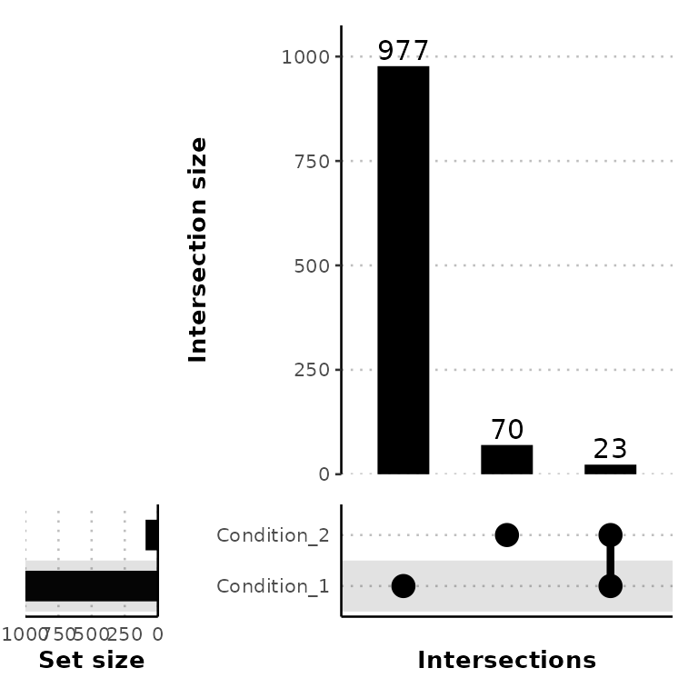
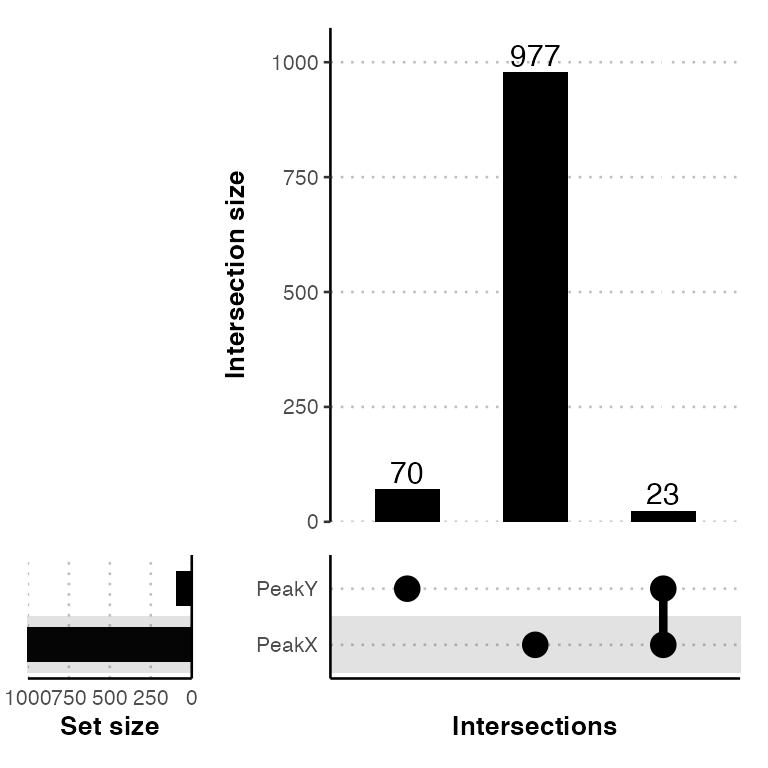
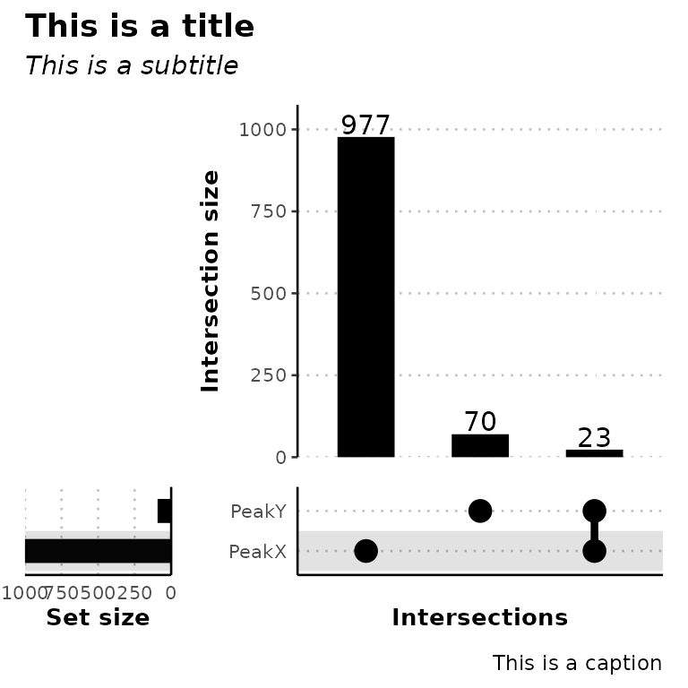

vignettes/07-ggUpsetPeaks.Rmd
07-ggUpsetPeaks.RmdggUpsetPeaks()
ggUpsetPeaks() draws an UpSet plot with the intersections between different sets of peaks using the function getVennCounts() (which calls ChIPpeakAnno::makeVennDiagram()), builds each part of the plot separatelly using ggplot2 and puts all plots together using patchwork.
Look at the patchwork package documentation
Look at the makeVennDiagram() function documentation
As input, ggUpsetPeaks() takes a named list of data frames with the columns seqnames, start and end.
# read the peak annotation into a list
peak_list <- list.files("../testdata", "peak", full.names = T, recursive = T) %>%
purrr::set_names(c("PeakX", "PeakY")) %>%
purrr::map(~read.delim(.x))
peak_list[[1]][1:5, 1:7]## seqnames start end width strand peakID annotation
## 1 chr7 3664442 3664743 302 * peak_2428 Promoter
## 2 chr8 83199578 83200817 1240 * peak_2684 Intron
## 3 chr13 20147802 20148111 310 * peak_696 Intron
## 4 chr4 56639205 56639610 406 * peak_1896 Distal Intergenic
## 5 chr18 61614281 61614892 612 * peak_1373 Distal IntergenicgetVennCounts()
getVennCounts() calls ChIPpeakAnno::makeVennDiagram(), retrieves the Venn counts (number of overlaps between different sets of peaks) and builds a matrix of the peaks present in each set.
venn_counts <- getVennCounts(peak_list)
venn_counts$vennCounts
# PeakX PeakY Counts
# [1,] 0 0 0
# [2,] 0 1 70
# [3,] 1 0 977
# [4,] 1 1 23
# attr(,"class")
# [1] "VennCounts"
venn_counts$matrix[1:5,]
# peak PeakX PeakY
# peak1 0 1
# peak2 0 1
# peak3 0 1
# peak4 0 1
# peak5 0 1ggUpsetPeaks() calls the function getVennCounts() and builds the UpSet plot of the peaks using the Venn counts.
ggUpsetPeaks(peak_list, conds = c("Condition_1", "Condition_2"))## Using Intersection as id variables
#ggUpsetPeaks(peak_list, conds = c("Condition_1", "Condition_2"), conds_order = c("Condition_2", "Condition_1"))
ggUpsetPeaks(peak_list, order_by_freq = F)## Using Intersection as id variables
ggUpsetPeaks(peak_list, title = "This is a title", subtitle = "This is a subtitle",
caption = "This is a caption", )## Using Intersection as id variables
Since ggUpsetPeaks() outputs a ggplot2- and patchwork-based UpSet plot, it can be further customized with scales or theme and using the patchwork syntax.